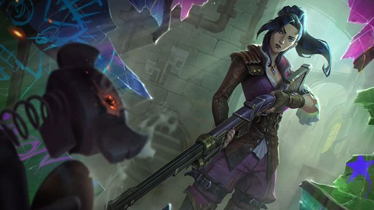

Caitlyn
Cảnh sát trưởng Piltover
Sinh ra trong một gia đình giàu có, chịu sự ảnh hưởng của các nghệ nhân hextech, Caitlyn nhanh chóng học được những lời hay ý đẹp của xã hội tân tiến Piltover, nhưng cô lại thích dành phần lớn thần gian của mình để khám phá những vùng đất hoang dã phía bên ngoài nó. Vẫn vô cùng thành thục như cách cô hòa nhập với tầng lớp cao quý lắm tiền của Thành phố Tiến bộ, khi rình rập một con nai dưới lớp bùn trong khu rừng, hay tự tin dõi theo một cánh chim lướt qua khu buôn bán, hoặc thậm chí là bắn vào mắt của thỏ rừng chỉ cách trăm bước với súng hỏa mai tự chế của cha để lại.
Tuy nhiên, thứ tài sản lớn nhất của Caitlyn chính là trí thông minh và sự ham học hỏi kế thừa từ cha mẹ, những người luôn giúp cô hiểu điều gì đúng và sai. Mặc dù nhờ kỹ năng và kỹ thuật đã khiến gia đình họ trở nên giàu có, nhưng mẹ cô vẫn luôn cảnh báo về những cám dỗ tồn tại ở Piltover, khi những những lời hứa mạ vàng có thể nhuốm màu trái tim nhân hậu nhất. Lúc đầu, Caitlyn không hề để ý —bởi đối với cô, Piltover là một nơi có vẻ đẹp, sự trật tự, nhất là sau những chuyến đi săn hoang dã trong khu rừng.
Tất cả những điều đó sẽ thay đổi vào Ngày Tiến Bộ, vài năm sau.
Caitlyn quay về và thấy căn nhà bị xới tung, hoàn toàn trống rỗng. Các gia nhân trong nhà đều đã chết, còn cha mẹ cô thì biến mất không để lại dấu vết. Caitlyn bảo đảm an ninh cho căn nhà, và ngay lập tức lên đường tìm những kẻ đã gây ra chuyện này.
Lần theo dấu vết trong khu vực giới hạn như một thành phố rất khác với việc đi săn trong tự nhiên, nhưng từng bước một, Caitlyn đã xác định được vị trí của những tên côn đồ đã xâm phạm gia đình mình. Không ai biết danh tính của kẻ đã thuê chúng —chỉ biết rằng người ủy quyền có tên C. Mặc dù vậy, con đường mòn ấy vẫn dẫn Caitlyn đến một phòng thí nghiệm hextech bí mật, nơi cha và mẹ cô bị buộc phải làm việc cho một gia tộc thương nhân đối thủ, cô giải cứu họ. Đội Cảnh Vệ Piltover, hành động theo thông tin cô cung cấp, sau đó bắt giữ thủ lĩnh gia tộc đứng sau vụ bắt cóc, dù vậy họ vẫn không thể lần ra dấu vết về “C” bí ẩn.
Caitlyn và cha mẹ cô bắt đầu gây dựng lại cuộc sống của họ… nhưng có gì đó đã thay đổi trong cô. Giờ đây, cô nhận ra những tham vọng, sự đói khát như con thú bị dồn vào chân tường, ẩn nấp dưới lớp vỏ sáng lấp lánh của Piltover. Cô đã nhìn thấy những người cần giúp đỡ và biết rằng cô có thể giúp họ. Và, dù rất yêu thương cha mẹ, nhưng Caitlyn không muốn nối nghiệp gia đình.
Cô học cách để trở thành một điều tra viên, sử dụng kỹ năng săn bắn để hoạt động như một thám tử giúp tìm kiếm những người bị thất lạc, hoặc bị cướp. Vào sinh nhật lần thứ 21 của cô, cha mẹ Caitlyn đã tặng cô một khẩu súng trường hextech được chế tác tinh xảo, với độ chuẩn xác hơn bất kỳ loại súng nào có thể đạt tới. Loại vũ khí này có thể thay đổi hình dạng chuyên dụng và dễ dàng sử dụng trên thực địa, vì thế, Caitlyn luôn đem nó đi cùng mỗi khi tham gia vào vụ án nào đó.
Công việc này đã dạy cô ấy về sự hấp dẫn và nguy hiểm của việc phát triển hextech và chemtech khi chưa được kiểm chứng. Chỉ trong vài năm, cô đã tạo dựng tên tuổi của mình như một người có thể giúp đỡ những vấn đề thiết thực… và bí mật. Sau một vụ án đau thương liên quan đến thiết bị hextech bị đánh cắp và hàng loạt vụ bắt cóc trẻ em, Caitlyn đã được Cảnh binh triệu tập.
Cô đã được giới thiệu tham gia bởi một người cũng cảm thấy có mối liên hệ rất lạ lẫm với những phi vụ này—và cuộc chiến của họ với một nhà khoa học phát điên bởi chính những thứ mình tạo ra khiến cô được đề nghị trở thành cảnh sát trưởng. Lúc đầu, Caitlyn từ chối, nhưng cuối cùng cô nhận ra rằng những Cảnh binh cần sự giúp đỡ và cô có thể đến gần hơn trong việc khám phá danh tính thật sự của “C”, người duy nhất vẫn chưa hề lộ diện khi đã theo dõi, tấn công gia đình cô.
Caitlyn kể từ đó đã trở thành một sĩ quan được kính trọng trong hàng ngũ Cảnh binh, duy trì trật tự ở Thành phố Tiến bộ. Cô ấy gần đây trở thành cộng sự với một tân binh từ Zaun, Vi hỗn hào và liều lĩnh. Làm thế nào một bộ đôi không chắc chắn như vậy lại ra đời —và được minh chứng là vô cùng hiệu quả— họ trở thành chủ đề của những lời đồn đoán trong các quán rượu, nơi đồng nghiệp trút bầu tâm sự, cũng như những kẻ bị tống vào tù.